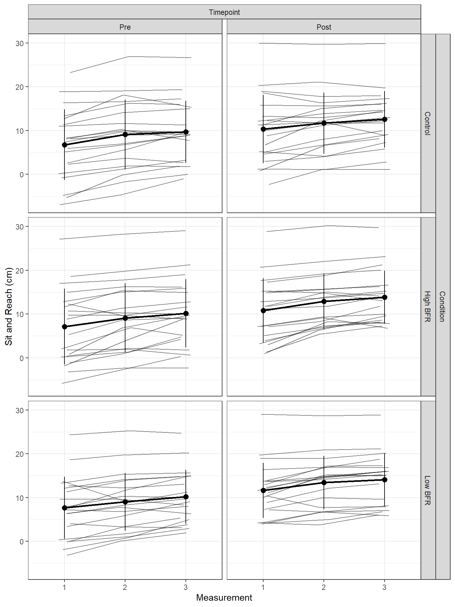
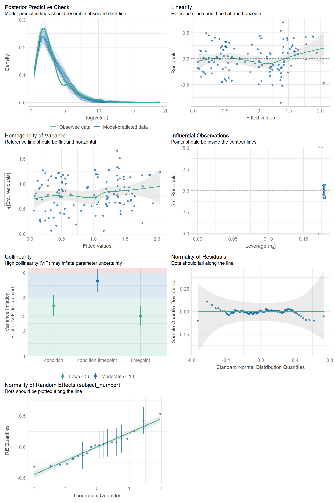
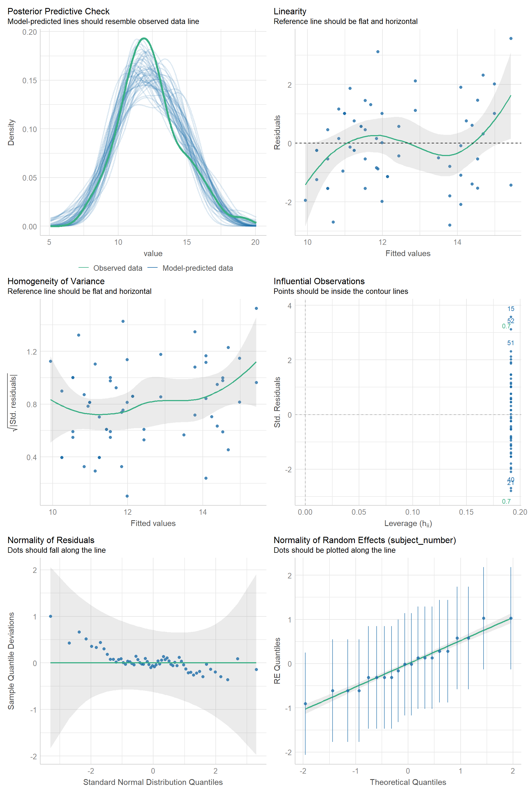

Model Structures, Checks, and Diagnostics
Sit and Reach Model
Structure
The model for sit and reach outcomes included fixed effects for condition (“Control”, “Low BFR”, “High BFR”), timepoint (“Pre”, “Post”), and their interaction, as well as a fixed effect for measurement (i.e., at each timepoint and in each condition three measurements were taken) as there appeared to be an increase in sit and reach scores across measurements (see Figure 1).
In addition random intercepts for participants were included as well as random slopes for condition, timepoint, and their interaction, and also measurement. The model structure was therefore as follows:
\[ \tiny \begin{aligned} \operatorname{value}_{i} &\sim N \left(\mu, \sigma^2 \right) \\ \mu &=\alpha_{j[i]} + \beta_{1j[i]}(\operatorname{Condition}_{\operatorname{Low BFR}}) + \beta_{2j[i]}(\operatorname{Condition}_{\operatorname{High BFR}}) + \beta_{3j[i]}(\operatorname{Timepoint}) + \beta_{4j[i]}(\operatorname{Measurement}) + \beta_{5j[i]}(\operatorname{Condition}_{\operatorname{Low BFR}} \times \operatorname{Timepoint}) + \beta_{6j[i]}(\operatorname{Condition}_{\operatorname{High BFR}} \times \operatorname{Timepoint}) \\ \left( \begin{array}{c} \begin{aligned} &\alpha_{j} \\ &\beta_{1j} \\ &\beta_{2j} \\ &\beta_{3j} \\ &\beta_{4j} \\ &\beta_{5j} \\ &\beta_{6j} \end{aligned} \end{array} \right) &\sim N \left( \left( \begin{array}{c} \begin{aligned} &\mu_{\alpha_{j}} \\ &\mu_{\beta_{1j}} \\ &\mu_{\beta_{2j}} \\ &\mu_{\beta_{3j}} \\ &\mu_{\beta_{4j}} \\ &\mu_{\beta_{5j}} \\ &\mu_{\beta_{6j}} \end{aligned} \end{array} \right) , \left( \begin{array}{ccccccc} \sigma^2_{\alpha_{j}} & \rho_{\alpha_{j}\beta_{1j}} & \rho_{\alpha_{j}\beta_{2j}} & \rho_{\alpha_{j}\beta_{3j}} & \rho_{\alpha_{j}\beta_{4j}} & \rho_{\alpha_{j}\beta_{5j}} & \rho_{\alpha_{j}\beta_{6j}} \\ \rho_{\beta_{1j}\alpha_{j}} & \sigma^2_{\beta_{1j}} & \rho_{\beta_{1j}\beta_{2j}} & \rho_{\beta_{1j}\beta_{3j}} & \rho_{\beta_{1j}\beta_{4j}} & \rho_{\beta_{1j}\beta_{5j}} & \rho_{\beta_{1j}\beta_{6j}} \\ \rho_{\beta_{2j}\alpha_{j}} & \rho_{\beta_{2j}\beta_{1j}} & \sigma^2_{\beta_{2j}} & \rho_{\beta_{2j}\beta_{3j}} & \rho_{\beta_{2j}\beta_{4j}} & \rho_{\beta_{2j}\beta_{5j}} & \rho_{\beta_{2j}\beta_{6j}} \\ \rho_{\beta_{3j}\alpha_{j}} & \rho_{\beta_{3j}\beta_{1j}} & \rho_{\beta_{3j}\beta_{2j}} & \sigma^2_{\beta_{3j}} & \rho_{\beta_{3j}\beta_{4j}} & \rho_{\beta_{3j}\beta_{5j}} & \rho_{\beta_{3j}\beta_{6j}} \\ \rho_{\beta_{4j}\alpha_{j}} & \rho_{\beta_{4j}\beta_{1j}} & \rho_{\beta_{4j}\beta_{2j}} & \rho_{\beta_{4j}\beta_{3j}} & \sigma^2_{\beta_{4j}} & \rho_{\beta_{4j}\beta_{5j}} & \rho_{\beta_{4j}\beta_{6j}} \\ \rho_{\beta_{5j}\alpha_{j}} & \rho_{\beta_{5j}\beta_{1j}} & \rho_{\beta_{5j}\beta_{2j}} & \rho_{\beta_{5j}\beta_{3j}} & \rho_{\beta_{5j}\beta_{4j}} & \sigma^2_{\beta_{5j}} & \rho_{\beta_{5j}\beta_{6j}} \\ \rho_{\beta_{6j}\alpha_{j}} & \rho_{\beta_{6j}\beta_{1j}} & \rho_{\beta_{6j}\beta_{2j}} & \rho_{\beta_{6j}\beta_{3j}} & \rho_{\beta_{6j}\beta_{4j}} & \rho_{\beta_{6j}\beta_{5j}} & \sigma^2_{\beta_{6j}} \end{array} \right) \right) \text{, for participant j = 1,} \dots \text{,J} \end{aligned} \]
Checks and Diagnostics
Visual checks and diagnostics for the sit and reach model can be seen in Figure 2.
Lactate Model
Structure
The model for lactate outcomes used the log transformed lactate as the dependent variable (initial modelling using the raw values produced very poor posterior predictive checks) included fixed effects for condition (“Control”, “Low BFR”, “High BFR”), timepoint (“Pre”, “Post”), and their interaction, as well random intercepts for participants. The model structure was therefore as follows:
\[ \small \begin{aligned} \operatorname{value}_{i} &\sim N \left(\mu, \sigma^2 \right) \\ \mu &=\alpha_{j[i]} + \beta_{1}(\operatorname{Condition}_{\operatorname{Low BFR}}) + \beta_{2}(\operatorname{Condition}_{\operatorname{High BFR}}) + \beta_{3}(\operatorname{Timepoint}) + \beta_{4}(\operatorname{Condition}_{\operatorname{Low BFR}} \times \operatorname{Timepoint}) + \beta_{5}(\operatorname{Condition}_{\operatorname{High BFR}} \times \operatorname{Timepoint}) \\ \alpha_{j} &\sim N \left(\mu_{\alpha_{j}}, \sigma^2_{\alpha_{j}} \right) \text{, for participant j = 1,} \dots \text{,J} \end{aligned} \]
Checks and Diagnostics
Visual checks and diagnostics for the lactate model can be seen in Figure 3.

Borg RPE Model
Structure
The model for Borg RPE outcomes included only the fixed effect for condition (“Control”, “Low BFR”, “High BFR”) due to there only being post warm-up values recorded, as well random intercepts for participants. The model structure was therefore as follows:
\[ \begin{aligned} \operatorname{value}_{i} &\sim N \left(\alpha_{j[i]} + \beta_{1}(\operatorname{Condition}_{\operatorname{Low BFR}}) + \beta_{2}(\operatorname{Condition}_{\operatorname{High BFR}}), \sigma^2 \right) \\ \alpha_{j} &\sim N \left(\mu_{\alpha_{j}}, \sigma^2_{\alpha_{j}} \right) \text{, for participant j = 1,} \dots \text{,J} \end{aligned} \]
Checks and Diagnostics
Visual checks and diagnostics for the Borg RPE model can be seen in Figure 4.

Heart Rate Model
Structure
The model for heart rate outcomes included the fixed effect for condition (“Control”, “Low BFR”, “High BFR”), the time of recording in minutes during the warm-up, as well as their interaction. Random intercepts for participants were also included in addition to random slopes for condition, minute, and their interaction. The model structure was therefore as follows:
\[ \tiny \begin{aligned} \operatorname{value}_{i} &\sim N \left(\mu, \sigma^2 \right) \\ \mu &=\alpha_{j[i]} + \beta_{1j[i]}(\operatorname{Condition}_{\operatorname{Low BFR}}) + \beta_{2j[i]}(\operatorname{Condition}_{\operatorname{High BFR}}) + \beta_{3j[i]}(\operatorname{Minute}) + \beta_{4j[i]}(\operatorname{Condition}_{\operatorname{Low BFR}} \times \operatorname{Minute}) + \beta_{5j[i]}(\operatorname{Condition}_{\operatorname{High BFR}} \times \operatorname{Minute}) \\ \left( \begin{array}{c} \begin{aligned} &\alpha_{j} \\ &\beta_{1j} \\ &\beta_{2j} \\ &\beta_{3j} \\ &\beta_{4j} \\ &\beta_{5j} \end{aligned} \end{array} \right) &\sim N \left( \left( \begin{array}{c} \begin{aligned} &\mu_{\alpha_{j}} \\ &\mu_{\beta_{1j}} \\ &\mu_{\beta_{2j}} \\ &\mu_{\beta_{3j}} \\ &\mu_{\beta_{4j}} \\ &\mu_{\beta_{5j}} \end{aligned} \end{array} \right) , \left( \begin{array}{cccccc} \sigma^2_{\alpha_{j}} & \rho_{\alpha_{j}\beta_{1j}} & \rho_{\alpha_{j}\beta_{2j}} & \rho_{\alpha_{j}\beta_{3j}} & \rho_{\alpha_{j}\beta_{4j}} & \rho_{\alpha_{j}\beta_{5j}} \\ \rho_{\beta_{1j}\alpha_{j}} & \sigma^2_{\beta_{1j}} & \rho_{\beta_{1j}\beta_{2j}} & \rho_{\beta_{1j}\beta_{3j}} & \rho_{\beta_{1j}\beta_{4j}} & \rho_{\beta_{1j}\beta_{5j}} \\ \rho_{\beta_{2j}\alpha_{j}} & \rho_{\beta_{2j}\beta_{1j}} & \sigma^2_{\beta_{2j}} & \rho_{\beta_{2j}\beta_{3j}} & \rho_{\beta_{2j}\beta_{4j}} & \rho_{\beta_{2j}\beta_{5j}} \\ \rho_{\beta_{3j}\alpha_{j}} & \rho_{\beta_{3j}\beta_{1j}} & \rho_{\beta_{3j}\beta_{2j}} & \sigma^2_{\beta_{3j}} & \rho_{\beta_{3j}\beta_{4j}} & \rho_{\beta_{3j}\beta_{5j}} \\ \rho_{\beta_{4j}\alpha_{j}} & \rho_{\beta_{4j}\beta_{1j}} & \rho_{\beta_{4j}\beta_{2j}} & \rho_{\beta_{4j}\beta_{3j}} & \sigma^2_{\beta_{4j}} & \rho_{\beta_{4j}\beta_{5j}} \\ \rho_{\beta_{5j}\alpha_{j}} & \rho_{\beta_{5j}\beta_{1j}} & \rho_{\beta_{5j}\beta_{2j}} & \rho_{\beta_{5j}\beta_{3j}} & \rho_{\beta_{5j}\beta_{4j}} & \sigma^2_{\beta_{5j}} \end{array} \right) \right) \text{, for participant j = 1,} \dots \text{,J} \end{aligned} \]
Checks and Diagnostics
Visual checks and diagnostics for the heart rate model can be seen in Figure 5.
Countermovement Jump Model
Structure
The model for countermovement jump outcomes included only the fixed effect for condition (“Control”, “Low BFR”, “High BFR”) due to there only being post warm-up values recorded, as well random intercepts for participants and random slopes for condition. The model structure was therefore as follows. The model structure was therefore as follows:
\[ \begin{aligned} \operatorname{value}_{i} &\sim N \left(\alpha_{j[i]} + \beta_{1j[i]}(\operatorname{Condition}_{\operatorname{Low BFR}}) + \beta_{2j[i]}(\operatorname{Condition}_{\operatorname{High BFR}}), \sigma^2 \right) \\ \left( \begin{array}{c} \begin{aligned} &\alpha_{j} \\ &\beta_{1j} \\ &\beta_{2j} \end{aligned} \end{array} \right) &\sim N \left( \left( \begin{array}{c} \begin{aligned} &\mu_{\alpha_{j}} \\ &\mu_{\beta_{1j}} \\ &\mu_{\beta_{2j}} \end{aligned} \end{array} \right) , \left( \begin{array}{ccc} \sigma^2_{\alpha_{j}} & \rho_{\alpha_{j}\beta_{1j}} & \rho_{\alpha_{j}\beta_{2j}} \\ \rho_{\beta_{1j}\alpha_{j}} & \sigma^2_{\beta_{1j}} & \rho_{\beta_{1j}\beta_{2j}} \\ \rho_{\beta_{2j}\alpha_{j}} & \rho_{\beta_{2j}\beta_{1j}} & \sigma^2_{\beta_{2j}} \end{array} \right) \right) \text{, for participant j = 1,} \dots \text{,J} \end{aligned} \]
Checks and Diagnostics
Visual checks and diagnostics for the countermovement jump model can be seen in Figure 6.
Sprint Model
Structure
The model for sprint outcomes included the fixed effect for condition (“Control”, “Low BFR”, “High BFR”), distance covered in meters, and their interaction. Random intercepts for participants and random slopes for condition and distance were included (though their interaction was not due to it introducing singularity). The model structure was therefore as follows. The model structure was therefore as follows:
\[ \tiny \begin{aligned} \operatorname{value}_{i} &\sim N \left(\mu, \sigma^2 \right) \\ \mu &=\alpha_{j[i]} + \beta_{1j[i]}(\operatorname{Condition}_{\operatorname{Low BFR}}) + \beta_{2j[i]}(\operatorname{Condition}_{\operatorname{High BFR}}) + \beta_{3j[i]}(\operatorname{Distance}) + \beta_{4}(\operatorname{Condition}_{\operatorname{Low BFR}} \times \operatorname{Distance}) + \beta_{5}(\operatorname{Condition}_{\operatorname{High BFR}} \times \operatorname{Distance}) \\ \left( \begin{array}{c} \begin{aligned} &\alpha_{j} \\ &\beta_{1j} \\ &\beta_{2j} \\ &\beta_{3j} \end{aligned} \end{array} \right) &\sim N \left( \left( \begin{array}{c} \begin{aligned} &\mu_{\alpha_{j}} \\ &\mu_{\beta_{1j}} \\ &\mu_{\beta_{2j}} \\ &\mu_{\beta_{3j}} \end{aligned} \end{array} \right) , \left( \begin{array}{cccc} \sigma^2_{\alpha_{j}} & \rho_{\alpha_{j}\beta_{1j}} & \rho_{\alpha_{j}\beta_{2j}} & \rho_{\alpha_{j}\beta_{3j}} \\ \rho_{\beta_{1j}\alpha_{j}} & \sigma^2_{\beta_{1j}} & \rho_{\beta_{1j}\beta_{2j}} & \rho_{\beta_{1j}\beta_{3j}} \\ \rho_{\beta_{2j}\alpha_{j}} & \rho_{\beta_{2j}\beta_{1j}} & \sigma^2_{\beta_{2j}} & \rho_{\beta_{2j}\beta_{3j}} \\ \rho_{\beta_{3j}\alpha_{j}} & \rho_{\beta_{3j}\beta_{1j}} & \rho_{\beta_{3j}\beta_{2j}} & \sigma^2_{\beta_{3j}} \end{array} \right) \right) \text{, for participant j = 1,} \dots \text{,J} \end{aligned} \]
Checks and Diagnostics
Visual checks and diagnostics for the sprint model can be seen in Figure 7.

Isometric Mid Thigh Pull Model
Structure
The model for isometric mid thigh pull outcomes included only the fixed effect for condition (“Control”, “Low BFR”, “High BFR”) due to there only being post warm-up values recorded, as well random intercepts for participants and random slopes for condition. The model structure was therefore as follows. The model structure was therefore as follows:
\[ \begin{aligned} \operatorname{value}_{i} &\sim N \left(\alpha_{j[i]} + \beta_{1j[i]}(\operatorname{Condition}_{\operatorname{Low BFR}}) + \beta_{2j[i]}(\operatorname{Condition}_{\operatorname{High BFR}}), \sigma^2 \right) \\ \left( \begin{array}{c} \begin{aligned} &\alpha_{j} \\ &\beta_{1j} \\ &\beta_{2j} \end{aligned} \end{array} \right) &\sim N \left( \left( \begin{array}{c} \begin{aligned} &\mu_{\alpha_{j}} \\ &\mu_{\beta_{1j}} \\ &\mu_{\beta_{2j}} \end{aligned} \end{array} \right) , \left( \begin{array}{ccc} \sigma^2_{\alpha_{j}} & \rho_{\alpha_{j}\beta_{1j}} & \rho_{\alpha_{j}\beta_{2j}} \\ \rho_{\beta_{1j}\alpha_{j}} & \sigma^2_{\beta_{1j}} & \rho_{\beta_{1j}\beta_{2j}} \\ \rho_{\beta_{2j}\alpha_{j}} & \rho_{\beta_{2j}\beta_{1j}} & \sigma^2_{\beta_{2j}} \end{array} \right) \right) \text{, for participant j = 1,} \dots \text{,J} \end{aligned} \]
Checks and Diagnostics
Visual checks and diagnostics for the isometric mid thigh pull model can be seen in Figure 8.